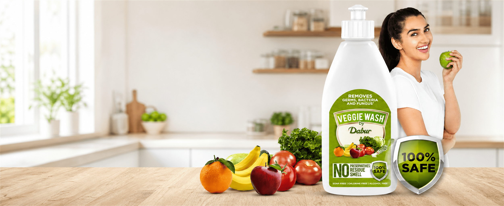
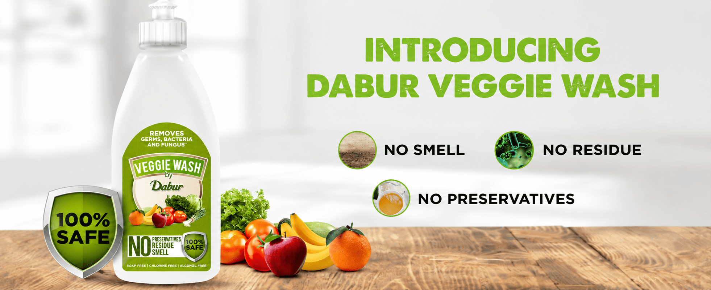

The communication needed to establish why produce care matters without relying on fear or an overload of technical claims.
← Back to workFresh reaches home.
Dabur · Product Film
Fresh reaches home.
Care begins before cooking.

Project overview
A new cleaning step.
Made naturally easy.
Fresh produce enters the kitchen carrying an invisible question: is rinsing alone enough? The film turns that concern into a simple, reassuring preparation ritual.
Product, produce and clear demonstrations work together to introduce Dabur Veggie Wash without making everyday food care feel complicated.
- Product
- Fruit + Vegetable Wash
- Moment
- Before Preparation
- Core Thought
- Clean + Fresh
- Visual World
- Bright + Natural
The product film
From market basket.
To a cleaner kitchen ritual.
A concise product story makes the need visible, shows the solution in use and returns attention to fresh food ready for the family table.
The challenge
Make an invisible concern
immediately understandable.
A new category becomes useful only when audiences can picture the product naturally fitting between shopping and cooking.
The narrative
See the need.
Meet the solution.
- 01
Recognise
Begin with familiar fruits and vegetables to place the message inside everyday life.
- 02
Demonstrate
Show a clear cleaning action so the product’s role is understood without explanation-heavy copy.
- 03
Reassure
Resolve on appetising produce, a recognisable pack and a confident freshness cue.
The visual language
Clean whites.
Food-first colour.
High-key kitchens create reassurance while vivid, natural produce keeps appetite at the centre. Green acts as a purposeful product cue rather than taking over the Madverse case-study system.

How the film works
Useful information.
Freshly delivered.
Product clarity
The bottle and label stay recognisable so the category is understood at a glance.
Real-life context
A familiar kitchen environment connects the benefit to an everyday routine.
Food appeal
Colour, texture and close produce detail prevent hygiene messaging from feeling clinical.
Direct rhythm
A need–solution–reassurance structure keeps the product lesson memorable and concise.
The outcome
A useful product.
A clear reason to care.
The film gives an emerging product category an accessible role inside the kitchen and leaves viewers with one simple behaviour to remember.
Quick understanding
The product’s purpose is visible before the audience needs a detailed explanation.
Everyday relevance
The story connects produce cleaning to a familiar preparation moment.
Fresh recall
Bright food imagery gives the functional message an appetising memory cue.
Fresh food comes home.Care takes it forward.
Have a useful product truth to make memorable?